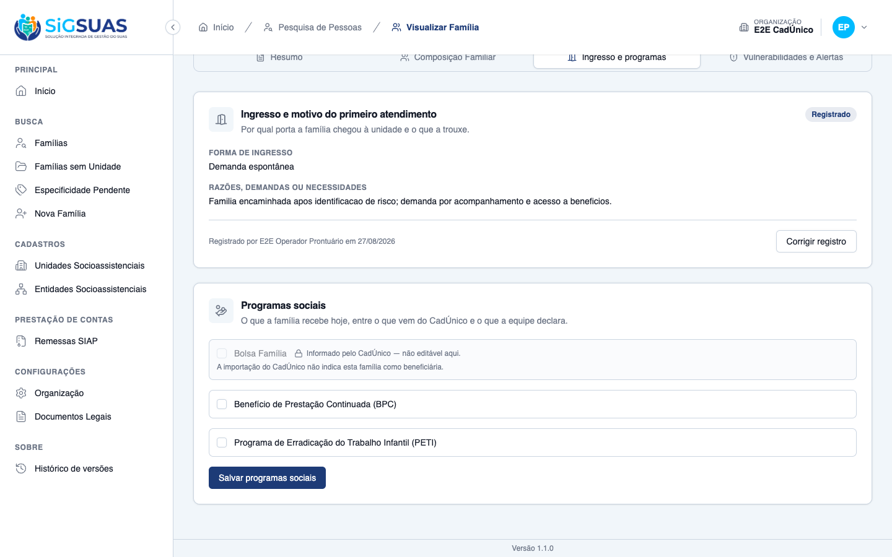
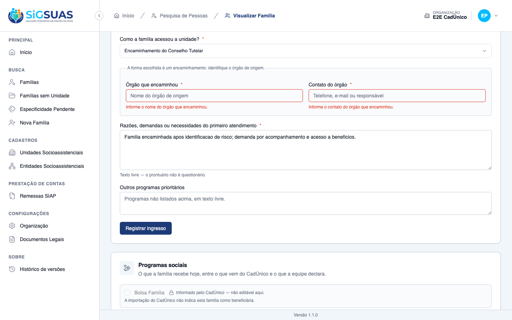
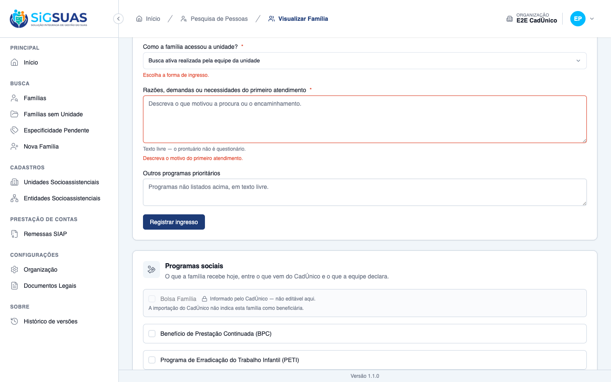
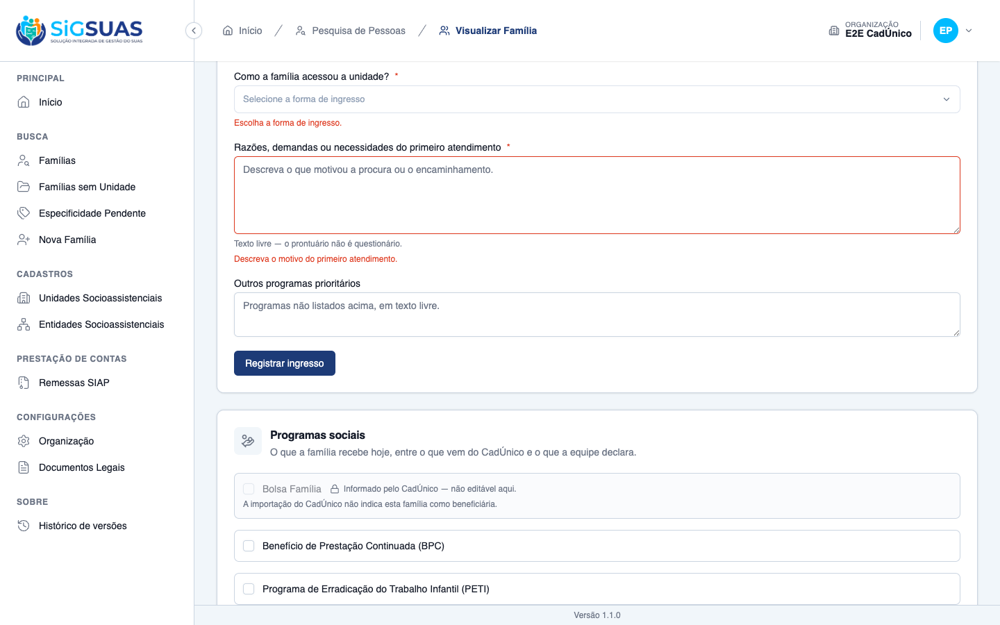
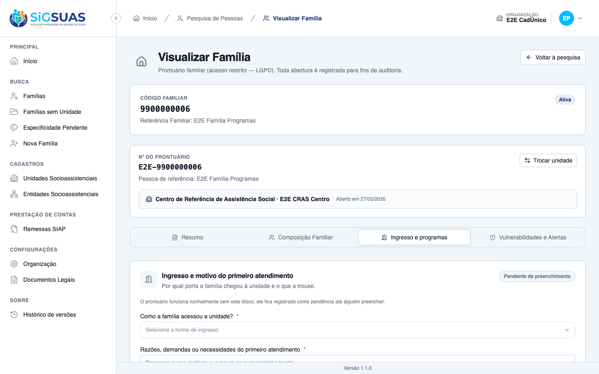
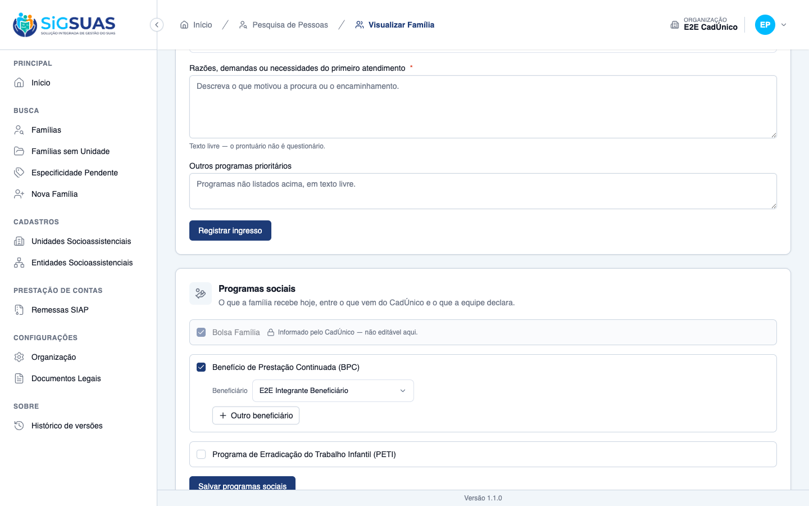
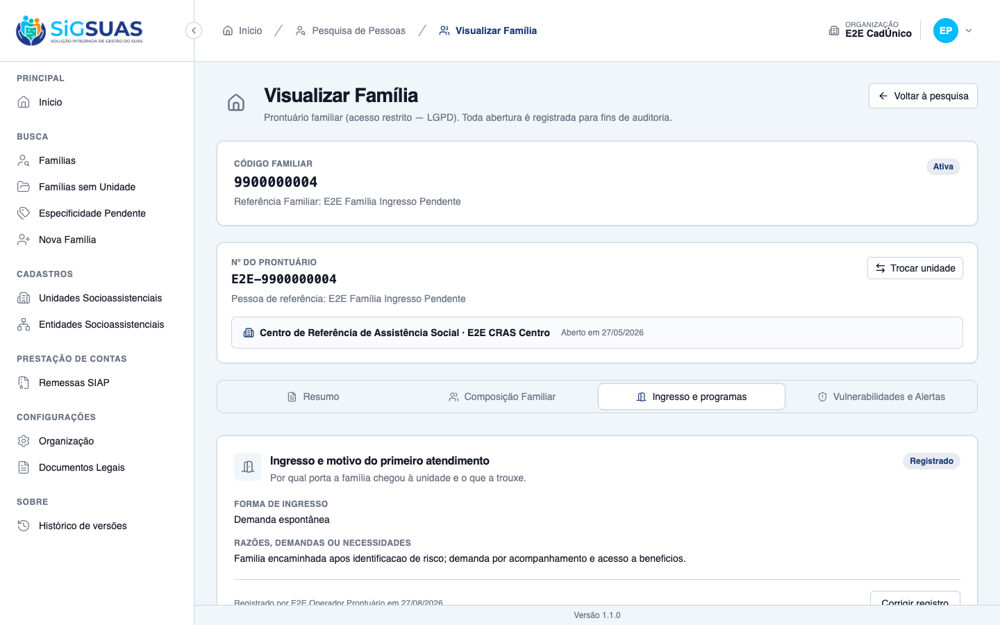

Relatório de Critérios de Aceite — Forma de Ingresso e Primeiro Atendimento
Resumo
10 critérios de aceite, <b>todos os 10 evidenciados no navegador</b>. Nenhum critério reprovado. A suíte da história fecha <b>52 testes / 251 asserções</b>, incluindo os testes de isolamento por tenant das duas tabelas novas. Esta é a segunda emissão do relatório: o CA10 foi reevidenciado após a revisão da regra de acesso da #10617, e o CA06 recebeu a investigação completa do elo com a remessa ao TCE-AL — a marcação do BPC está provada, e o leiaute que a consome só poderá carregá-la quando o acompanhamento PAIF/PAEFI existir, na fase F3. Dois achados merecem registro: um acerto de LGPD — o texto livre do motivo não entra na trilha de auditoria, e há teste dedicado a garantir isso — e um defeito menor de usabilidade, em que a mensagem de erro não some depois que o campo é corrigido. Detalhes em “Observações e ressalvas”.
| CA | Critério | Status |
|---|---|---|
| CA01 | Registrar ingresso por demanda espontânea | ATENDIDO · navegador |
| CA02 | Encaminhamento exige o órgão de origem | ATENDIDO · navegador |
| CA03 | Busca ativa não pede órgão | ATENDIDO · navegador |
| CA04 | Motivo é obrigatório | ATENDIDO · navegador |
| CA05 | Bolsa Família vem da importação e não é editável | ATENDIDO · navegador |
| CA06 | BPC é declarado e indica o beneficiário | ATENDIDO · navegador |
| CA07 | Registro único por prontuário | ATENDIDO · navegador |
| CA08 | Correção auditada | ATENDIDO · navegador |
| CA09 | Bloco pendente não impede o resto | ATENDIDO · navegador |
| CA10 | Isolamento e acesso por unidade | ATENDIDO · navegador |
CA01 — Registrar ingresso por demanda espontânea ATENDIDO · navegador
Critério (Gherkin): Dado que sou Operacional do Tenant com o add-on LGPD e o prontuário da família Silva está aberto no "CRAS Centro" Quando eu registrar que a família chegou por demanda espontânea e descrever as razões do primeiro atendimento Então o registro é salvo com meu nome e a data E aparece no prontuário da família
Como foi testado: Prontuário da família com ingresso pendente → aba Ingresso e programas → forma Demanda espontânea + texto das razões → Registrar ingresso.
- POST /families/{uuid}/intake → 201 Created.
- O bloco deixa de ser “Pendente de preenchimento” e passa a “Registrado”.
- O registro aparece no prontuário com a forma de ingresso e o texto das razões.
- A autoria e a data ficam visíveis na própria tela: “Registrado por E2E Operador Prontuário em 27/08/2026”.
- Ao escolher demanda espontânea, os campos de órgão encaminhador não são apresentados.

CA02 — Encaminhamento exige o órgão de origem ATENDIDO · navegador
Critério (Gherkin): Dado que estou registrando o ingresso da família Souza Quando eu marcar que ela chegou por encaminhamento do Conselho Tutelar e tentar salvar sem informar o nome e o contato do órgão Então o registro não é salvo E o sistema indica que o órgão que encaminhou precisa ser identificado
Como foi testado: Forma Encaminhamento do Conselho Tutelar, com o motivo preenchido e os campos de órgão deixados em branco → Registrar ingresso.
- Ao escolher um encaminhamento, a tela explica por que os campos apareceram: “A forma escolhida é um encaminhamento: identifique o órgão de origem.”
- Surgem dois campos obrigatórios: <b>Órgão que encaminhou</b> e <b>Contato do órgão</b>.
- Ao tentar salvar sem eles, a validação recusa com mensagens específicas: “Informe o nome do órgão que encaminhou.” e “Informe o contato do órgão que encaminhou.”
- <b>Nenhuma requisição de gravação é emitida</b> — o registro não é salvo.
- A suíte mostra que a exigência não está codificada na tela: ela vem da própria linha do lookup (“it requires the referring agency because THE LOOKUP ROW says so”), e a validação acompanha quando a coluna vira.

CA03 — Busca ativa não pede órgão ATENDIDO · navegador
Critério (Gherkin): Dado que estou registrando o ingresso de uma família localizada pela equipe em visita ao território Quando eu marcar busca ativa realizada pela equipe da unidade Então o campo de órgão encaminhador não é exigido nem apresentado
Como foi testado: Seleção da forma Busca ativa realizada pela equipe da unidade.
- O painel inteiro deixa de mencionar “órgão” — verificação programática sobre o texto do bloco: nenhuma ocorrência.
- O campo não é apenas opcional: ele <b>não é apresentado</b>, como o critério exige.
- A suíte cobre também o outro lado: “it does NOT ask for the referring agency on active search — and rej…” — enviar o órgão mesmo assim é recusado.

CA04 — Motivo é obrigatório ATENDIDO · navegador
Critério (Gherkin): Dado que estou registrando o ingresso de uma família Quando eu escolher a forma de ingresso e tentar salvar sem descrever as razões ou necessidades Então o registro não é salvo E o sistema indica que o motivo do primeiro atendimento precisa ser informado
Como foi testado: Tentativa de Registrar ingresso com o campo de razões em branco.
- A validação recusa com “Descreva o motivo do primeiro atendimento.”
- Nenhuma requisição de gravação é emitida — o registro não é salvo.
- O campo é declaradamente livre: “Texto livre — o prontuário não é questionário.”
- Cobertura correspondente: “it refuses to save without the reason (CA04/RN04)”.

CA05 — Bolsa Família vem da importação e não é editável ATENDIDO · navegador
Critério (Gherkin): Dado que a família Silva foi importada do CadÚnico como beneficiária do Bolsa Família Quando eu abrir o bloco de programas sociais Então a marcação de Bolsa Família aparece já preenchida, identificada como vinda do CadÚnico E não posso alterá-la neste bloco
Como foi testado: Bloco Programas sociais no prontuário da família importada como beneficiária do PBF.
- A marcação de Bolsa Família aparece <b>já preenchida</b>: aria-checked = true.
- E está <b>bloqueada</b>: aria-disabled = true — não é possível alterá-la neste bloco.
- A origem é identificada na própria tela: “Informado pelo CadÚnico — não editável aqui.”
- O contraste confirma que o bloqueio é do PBF e não do bloco: BPC e PETI aparecem desmarcados e plenamente editáveis.
- A defesa não é só visual — a suíte cobre a tentativa por payload: “it REJECTS any attempt to change receives_pbf through this block”.

CA06 — BPC é declarado e indica o beneficiário ATENDIDO · navegador
Critério (Gherkin): Dado que a família Silva tem um integrante beneficiário do BPC Quando eu marcar o BPC e indicar qual integrante é o beneficiário Então a marcação é salva E fica disponível como perfil da família para a remessa ao TCE-AL
Como foi testado: Marcação do Benefício de Prestação Continuada (BPC) no bloco de programas sociais, escolha do integrante beneficiário e Salvar programas sociais.
- Ao marcar o BPC, surge o seletor <b>Beneficiário</b>, oferecendo os integrantes da família.
- PUT /families/{uuid}/social-programs → 200 OK.
- A marcação é salva com o beneficiário vinculado — linha em banco com o programa BPC e o integrante indicado — e a tela passa a exibir o nome dele no bloco.
- A marcação fica disponível como perfil da família: o modelo que a guarda é a origem declarada do campo <code>PerfilBPC</code> do leiaute 15.7, e o leiaute declara esse campo.
- LIMITE DECLARADO PELO PRÓPRIO SISTEMA: o leiaute 15.7 não pode ser emitido com conteúdo hoje. Ele lista as famílias <b>incluídas em acompanhamento no mês</b>, e o registro de acompanhamento PAIF/PAEFI pertence à fase F3 — não existe nesta fase. O leiaute sai apenas com o cabeçalho, o que o Manual do SIAP determina para leiaute sem movimento (“enviar em branco não é o mesmo que não enviar”). Ver “Observações e ressalvas”.
- A suíte cobre o caso plural, que a tela não evidencia sozinha: aceita dois beneficiários de BPC na mesma família, e recusa beneficiário que não seja integrante ativo dela.

CA07 — Registro único por prontuário ATENDIDO · navegador
Critério (Gherkin): Dado que já registrei a forma de ingresso da família Silva Quando eu abrir o bloco novamente Então vejo o registro existente, com autor e data E a ação disponível é corrigir o registro, não criar um segundo
Como foi testado: Recarga da página e reabertura da aba Ingresso e programas após o registro do CA01.
- O registro existente é apresentado, com a forma, as razões, o autor e a data.
- A única ação oferecida é <b>Corrigir registro</b>. O botão “Registrar ingresso” deixou de existir — verificação programática sobre a lista de botões da página.
- A unicidade não depende da tela: a suíte prova a recusa na API (“it refuses a SECOND intake record on the same family record”) e <b>no próprio banco</b>, por índice único parcial (“it blocks the second record at the DATABASE too”).

CA08 — Correção auditada ATENDIDO · navegador
Critério (Gherkin): Dado que registrei a forma de ingresso como demanda espontânea por engano Quando eu corrigir para encaminhamento da Saúde e informar o órgão Então a correção é salva E a trilha de auditoria da família registra a alteração, com autor e data
Como foi testado: Corrigir registro → forma Encaminhamento da Saúde → preenchimento do órgão e do contato → Salvar correção.
- PUT /families/{uuid}/intake → 200 OK — a correção é feita no registro existente, sem criar um segundo.
- A tela passa a mostrar a nova forma e o órgão informado, e troca o rótulo de autoria: “Corrigido por E2E Operador Prontuário em 27/08/2026”.
- A trilha registra a alteração com autor e data: description=updated, causer_id = o profissional, em 27/08/2026 04:04:31.
- As mudanças ficam rastreáveis campo a campo: intake_form_id 1 → 5, referring_agency_name null → “UBS Central - E2E”, referring_agency_contact null → o contato informado.
- A suíte cobre a contrapartida: corrigir para uma forma que não pede órgão <b>limpa</b> os campos de órgão (“it CLEARS the referring agency when corrected to a form that does n…”).
CA09 — Bloco pendente não impede o resto ATENDIDO · navegador
Critério (Gherkin): Dado que o prontuário da família Souza foi aberto e a forma de ingresso ainda não foi registrada Quando eu consultar o prontuário Então ele é apresentado normalmente E o bloco aparece identificado como pendente de preenchimento
Como foi testado: Abertura do prontuário de uma família com ingresso ainda não registrado.
- O prontuário é apresentado normalmente, com todas as abas disponíveis (Resumo, Composição Familiar, Ingresso e programas, Vulnerabilidades e Alertas).
- O bloco de ingresso aparece marcado como <b>Pendente de preenchimento</b>.
- A tela explicita que a pendência não trava nada: “O prontuário funciona normalmente sem este bloco; ele fica registrado como pendência até alguém preencher.”
CA10 — Isolamento e acesso por unidade ATENDIDO · navegador
Critério (Gherkin): Dado que sou Operacional lotado apenas no "CRAS Centro" Quando eu tentar registrar o ingresso de uma família referenciada no "CREAS" Então o prontuário não é acessível a mim, conforme o corte de acesso vigente
Como foi testado: Como operador, acesso direto ao prontuário da família referenciada no E2E CREAS. Reexecutado após a revisão da RN08 da #10617, descrita em “Observações e ressalvas”.
- O prontuário NÃO é acessível — o resultado exigido pelo critério é atendido.
- GET /families/{uuid}/details → <b>403 Forbidden</b>, com a tela “Acesso restrito” e o motivo declarado: “Esta família é referenciada em uma unidade socioassistencial onde você não possui lotação vigente.”
- Sem o prontuário, não há como alcançar o bloco de ingresso.
- MUDANÇA EM RELAÇÃO À VERSÃO ANTERIOR DESTE RELATÓRIO: até 27/08/2026 este caso respondia 404, indistinguível de um registro inexistente. O critério não especifica o código — exige apenas que o prontuário não seja acessível —, e segue atendido.
- A suíte separa as respostas do corte: acesso negado para família de unidade fora da lotação, 403 com error_code estável quando não há lotação vigente, e registro inexistente para família de outro município.

Observações e ressalvas
Revisão da RN08 da #10617 — o CA10 foi reevidenciado
Em 27/08/2026 a regra de acesso da HU #10617 foi revisada: a família referenciada em unidade fora da lotação do profissional deixou de ser tratada como registro inexistente (404) e passou a responder acesso negado (403), com o motivo declarado.
O CA10 desta história foi reexecutado após a mudança e segue atendido: o critério exige que o prontuário não seja acessível, sem especificar o código de retorno. A evidência anterior, que mostrava “Prontuário não encontrado”, foi substituída pela tela atual de “Acesso restrito”.
Nenhum outro critério desta história é afetado.
LGPD — o texto livre do motivo não vaza para a trilha de auditoria
O campo de razões do primeiro atendimento é texto livre preenchido pelo profissional e pode conter relato sensível sobre a família. Verificamos a trilha após registrar e após corrigir o ingresso: o activity_log guarda apenas os campos estruturados (intake_form_id, nome e contato do órgão) — o reason não aparece.
Não é acidente: existe teste dedicado a isso — “it NEVER leaks the reason (nor other_programs) into the activity_lo…”. Vale registrar como acerto, porque é o tipo de vazamento que costuma passar despercebido até uma auditoria.
CA06 — o elo com a remessa existe, mas não pode ser exercido até a fase F3
A primeira metade do critério está provada na tela e em banco: a marcação do BPC é salva com o integrante beneficiário indicado.
A segunda metade — “fica disponível como perfil da família para a remessa ao TCE-AL” — foi investigada até o fim, e o resultado merece registro. O campo PerfilBPC pertence ao leiaute 15.7, que relaciona as famílias incluídas em acompanhamento no mês. Como o registro de acompanhamento PAIF/PAEFI é da fase F3 e não existe nesta fase, o leiaute 15.7 sai apenas com o cabeçalho. O próprio código declara isso: “sem fonte no eSUAS: depende de registro de início de acompanhamento PAIF/PAEFI, que não existe no sistema”.
Isso não é omissão do sistema. O Manual do SIAP determina que todo leiaute integre a Remessa Parcial e que, sem movimento, se envie o XML apenas com o cabeçalho — “enviar em branco não é o mesmo que não enviar”. Gerar uma remessa hoje produziria um 15.7 vazio, o que não comprovaria nem desmentiria este critério.
Consequência de planejamento, que interessa ao PO: enquanto a F3 não existir, o BPC declarado no prontuário não chega ao TCE-AL. A declaração está sendo coletada e guardada corretamente desde já — o que evita ter de reconstruí-la depois —, mas o elo com a remessa só se fecha quando o acompanhamento entrar.
Simetria que ajuda a ler o épico: a mesma ausência da F3 satisfaz o CA08 da #10618 (abrir prontuário não coloca em acompanhamento, porque acompanhamento não existe) e impede a prova deste CA06.
Defeito menor de usabilidade: a mensagem de erro não some ao corrigir o campo
Após uma tentativa de salvar sem preencher, a mensagem “Escolha a forma de ingresso.” continua exibida mesmo depois de o profissional escolher uma forma válida. Observado em duas seleções diferentes (busca ativa e encaminhamento do Conselho Tutelar); a mensagem só desaparece na gravação seguinte.
Severidade baixa — não impede o registro nem corrompe dado. Mas induz dúvida: o profissional corrige o campo e a tela segue acusando erro. O ajuste natural é limpar o erro do campo no evento de mudança.
Unicidade do registro é defendida em duas camadas
O CA07 exige que não exista um segundo registro de ingresso por prontuário. A tela cumpre a parte dela oferecendo apenas “Corrigir registro”, mas a garantia real está abaixo: a API recusa a segunda criação e o banco a bloqueia por índice único parcial. Ou seja, mesmo uma requisição fabricada fora da tela não consegue duplicar o registro.
Integridade da massa
Os critérios exigiram gravar um ingresso (família de ingresso pendente) e declarar o BPC com beneficiário (família de programas). Ambas as alterações foram revertidas ao final por re-execução do E2EProntuarioSeeder. Nenhum outro dado foi alterado.
Anexo — Cobertura automatizada (Pest — FamilyIntake, FamilyIntakeActions, FamilySocialProgram, FamilyIntakeIsolation)
PASS Tests\Unit\Family\FamilyIntakeActionsTest ✓ it reads the referring-agency requirement STRAIGHT FROM THE LOOKUP… 0.75s ✓ it registers signing the record with the acting user and the tenant… 0.02s ✓ it never turns a second register into an update — the DB refuses it… 0.02s ✓ it classifies the unique-index collision so the controller can answ… 0.02s ✓ it finds the existing record scoped to the tenant, never across mun… 0.02s ✓ it corrects IN PLACE and clears the agency when the new form does n… 0.02s ✓ it syncs social programs treating (program, member) as the unit — t… 0.03s ✓ it deduplicates a repeated (program, member) pair in the payload 0.02s ✓ it offers only ACTIVE programs from the global lookup 0.02s PASS Tests\Unit\Models\FamilyIntakeFormTest ✓ it has correct fillable, casts and defaults 0.02s ✓ it uses soft deletes, HasUuid, LogsActivity and resolves by uuid 0.01s ✓ it is a GLOBAL lookup — never tenant-scoped 0.01s ✓ it keeps the referring agency rule as data, in a column 0.05s ✓ it enforces unique code 0.01s PASS Tests\Feature\Api\FamilyIntakeFormControllerTest ✓ it lists family intake forms 0.05s ✓ it shows a family intake form by uuid 0.02s ✓ it creates a family intake form carrying the referring agency rule 0.02s ✓ it defaults requires_referring_agency to false when omitted 0.02s ✓ it rejects a duplicate code 0.02s ✓ it requires code and name 0.02s ✓ it lets the super admin fix the referring agency rule without a dep… 0.03s ✓ it soft deletes a family intake form 0.01s ✓ it bulk deactivates and bulk activates family intake forms 0.02s ✓ it filters by is_active and by requires_referring_agency 0.02s ✓ it blocks write without permission 0.02s PASS Tests\Feature\Family\FamilyIntakeTest ✓ it registers the intake by spontaneous demand, signed and dated (CA… 0.08s ✓ it requires the referring agency because THE LOOKUP ROW says so (CA… 0.06s ✓ it does NOT ask for the referring agency on active search — and rej… 0.06s ✓ it FLIPS the lookup column and the validation follows — WITHOUT tou… 0.06s ✓ it serves the lookup RULE to the screen on load, so the front never… 0.05s ✓ it refuses to save without the reason (CA04/RN04) 0.05s ✓ it shows Bolsa Familia as imported and LOCKED (CA05/RN06) 0.05s ✓ it REJECTS any attempt to change receives_pbf through this block (C… 0.07s ✓ it accepts TWO BPC beneficiaries in the SAME family (CA06/P5) 0.07s ✓ it demands the beneficiary because THE LOOKUP says the program requ… 0.08s ✓ it refuses a beneficiary who is not an active member of THIS family… 0.05s ✓ it synchronises declarations idempotently, soft-deleting what left… 0.06s ✓ it serves everything the programs screen reads on load (CA05/CA06) 0.06s ✓ it refuses a SECOND intake record on the same family record (CA07/R… 0.05s ✓ it blocks the second record at the DATABASE too — the partial uniqu… 0.05s ✓ it corrects the record IN PLACE and audits the change (CA08/RN09) 0.07s ✓ it CLEARS the referring agency when corrected to a form that does n… 0.07s ✓ it answers 404 with a stable error_code when correcting a record th… 0.07s ✓ it NEVER leaks the reason (nor other_programs) into the activity_lo… 0.06s ✓ it presents the block as PENDING without blocking the record (CA09/… 0.07s ✓ it answers 404 for a family referenced in a unit outside my assignm… 0.05s ✓ it answers 403 with a stable error_code when there is no current as… 0.05s ✓ it answers 404 for a family of ANOTHER municipality (CA10/RN07) 0.05s PASS Tests\Feature\TenantIsolation\FamilyIntakeIsolationTest ✓ it applies BelongsToTenant to FamilyIntake 0.04s ✓ it applies BelongsToTenant to FamilySocialProgram 0.03s ✓ it keeps the scope a NO-OP outside the HTTP cycle — which is why pr… 0.03s ✓ it keeps the two lookups GLOBAL — without BelongsToTenant, on purpo… 0.03s Tests: 52 passed (251 assertions) Duration: 3.51s